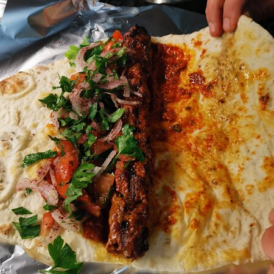

Vegan Adana Dürüm

Beschreibung
Klassischer Adana Wrap mit Fleischersatz, kann natürlich auch ohne Fleisch gemacht werden.
Zutaten
- Wraps
- 200 gr. Hackfleischersatz
- Salat
- Tomaten
- Gurke
- Zwiebeln
- etwas Zitronensaft
- 200 gr. Hüttenkäse
- 150 gr. Hirtenkäse
- 1 EL Tomatenmark
- etwas Wasser
- 2 Zehen Knoblauch
Zubereitung
- Tomatenmark, Hirtenkäse, Hüttenkäse, Knoblauch und etwas Wasser in eine Küchenmaschine und zerkleinern. Für die gewünschte Konsistenz mehr oder weniger Wasser hinzufügen.
- Öl in Pfanne erhitzen. Währenddessen den Hackfleischersatz zu einem Adana formen und von beiden Seiten mit Chiliflocken, Salz und Pfeffer würzen. Dann von jeder Seite goldbraun anbraten
- Gemüse kleinschneiden.
- Dürüm mit Sauce bestreichen, Adana drauflegen und den Rest des Gemüses hinzufügen. Mit etwas Zitronensaft abschließen.
- Dürüm zusammenrollen und in Kontaktgrill oder Pfanne goldbraun anbraten.
- Fertig.